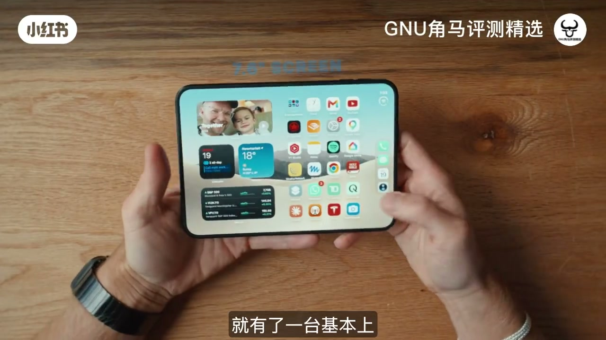
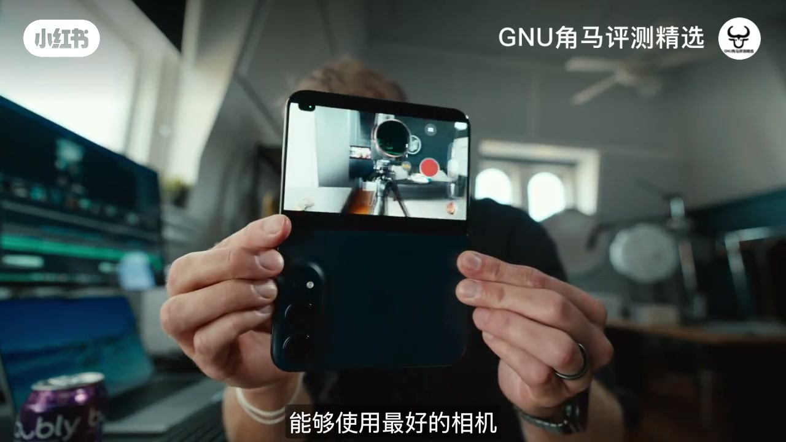
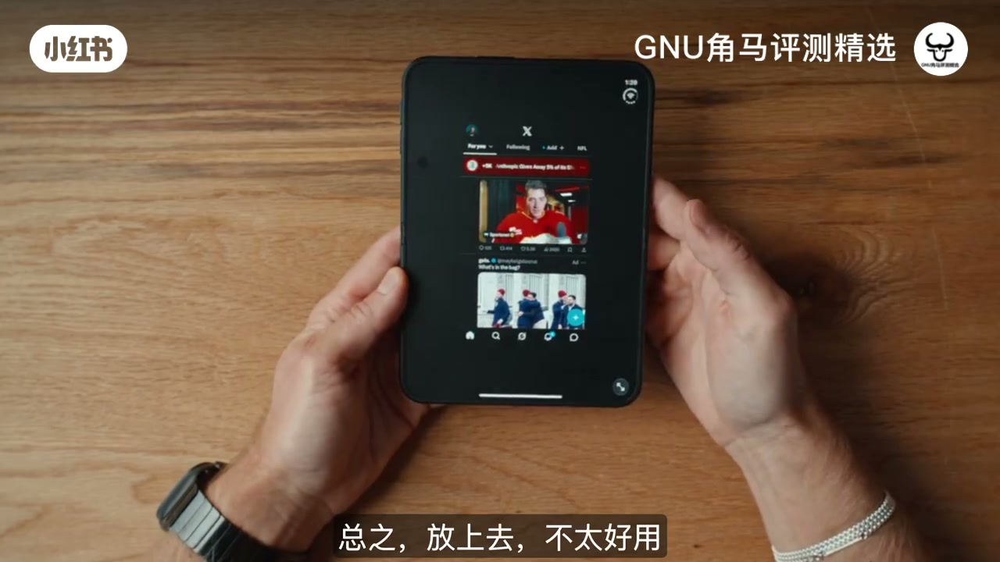

英语评测：喜欢但谈不上爱。折叠机硬件像魔法——极薄、有分量的轻、纳米纹理内屏户外可视且收起来不怕刮；展开用后置摄像头自拍/录像并监视自己是真刚需。痛点：无 Face ID 只靠侧边指纹，掏出解锁动作别扭；双应用分屏逻辑反直觉；无 ProRes/Apple Log（第三方或可绕）；超广角一般。结论：硬件到位，软件与「到底解锁什么」未完成，尚未 100% 说服自己换主力。
00:00–06:00
喜欢：薄、屏、阅读感
一周后仍不确定会否变主力。优点：折叠机里硬件像魔法；对比普通 Pro 极薄；内屏观感有深度，纳米纹理户外可用；合盖保护内屏，才敢上这种纹理。像很好的电子书手感。

[01:00] 开场立场：喜欢，但还没爱上；不确定能否当主力
Stance: like it, don’t love it yet—unsure as daily driver.
[02:30] 薄到离谱的手感：轻但有一点点分量，高级
Crazy thin: light with a bit of heft—feels premium.
[04:00] 纳米纹理内屏：户外可视，合盖保护所以敢用这层工艺
Nano-texture inner display: outdoor-readable, protected when folded.
06:00–13:00
最大不爽：解锁与影像监视器
无 Face ID，侧边指纹与掏出口袋的手势冲突，每次微调手指。反过来：展开当监视器，用后置最好的镜头拍自己，比前置自拍强太多；剪辑大屏也舒服。超广角还想要更强。

[06:30] 最大日常痛：没有 Face ID，侧边指纹与掏机动作打架
Daily pain: no Face ID—side fingerprint fights the unpocket gesture.
[10:00] 展开监视自己 + 后置主摄：自拍/视频逻辑被重写
Self-monitor with rear cameras—selfie/video logic rewritten.
[12:00] 大屏预览/剪辑像带了一块好监视器，但专业编码仍缺
Big-screen preview/edit feels like a monitor—pro codecs still missing.
13:00–22:00
软件还在打架
缺 ProRes/Apple Log；分屏：先点哪一侧、横竖翻转，笔记与视频位置会诡异消失或进小窗。半折支架反射桌面的酷用法也不稳。评测者感觉一半时间在和 Duo 的软件预期搏斗。
[14:00] 无 ProRes/Apple Log：对影像用户是实质减分
No ProRes/Apple Log—real hit for video users.

[18:00] 多任务分屏逻辑反直觉：应用消失、小窗、无法去想去的位置
Multitasking feels wrong: apps vanish, PiP, can’t place panes.
After using the Duo for about a week now, I don't think that this is a slam dunk product from Apple, at least not yet.
And honestly, I came into this review not knowing would this become my main device or not, and I still don't know.
I'm still not even sure if the iPhone Duo actually unlocks anything new for me.
Here's the reasons I like it, and here are the reasons I dislike it.
Let's start off with some of the good. For a folding phone, this thing is magic.
On the front here we get this little screen that kind of looks like a normal iPhone, except for it's a little bit wider.
So now we get some of the controls on the side versus on the bottom.
Personally, I love this size.It reminds me a lot of the iPhone Mini, the greatest iPhone of all time.
But then when you want it, you just unfold and you get this basically like mini iPad thing going on.
And this screen is by far the best part of the Duo, obviously, except for probably not the reason that you think.
I love the nano texture finish.It is so nice to watch things on.
It feels really good swiping around on here.
And because of that nano texture, when you're looking at the Duo, you don't see any of the crease or anything like that.
You can kind of see the crease if you look from the side.There is this slightly different way that the light reflects off of it.
One of the things you won't realize is how thin this thing is.It is so thin.
Here is a regular iPhone 18 Pro, and then here is the Duo.
And so in your hands, this feels so premium because it's so light but has a little heft to it.
And then this monitor is beautiful.The hardware is literally magic on this.
I know books are really cool on this.I actually never use my iPhone to read books or anything like that.
But now this actually feels like a book, the texture.It's like the best e-reader ever.
You can even hold it like it's an actual book, which is super interesting.
If you run your finger on the screen, you can definitely feel the crease a little bit.It's like a little wavy there.
And actually, if you kind of go around, there's a few spots where you can actually feel some bumps or imperfections, especially over here.
At least for me, the top right, I can kind of feel like there's something there.It's not completely smooth.
But you only really feel it if you're moving your finger around fast like this.You don't feel it when you're just kind of doing your normal day-to-day stuff.
And watching movies and TV shows on this is actually a really great experience.I rarely watch Netflix or even YouTube, sometimes YouTube videos, but not as much on my iPhone.
But now I've been kind of forcing myself to, but also it's just a really great experience.And I think that nanotexture is really the secret sauce here.
I know a lot of people online are like, oh, the contrast, whatever, it looks incredible in person.It almost has more depth for some reason.
I don't know if that's the nanotexture, what's going on, but it looks very different because of that nanotexture.
And that means you can also watch anywhere outside or wherever, even in the bright sunlight, and you get basically a perfect viewing experience.
I've been wondering how this nanotexture is going to hold up over time, and so far I'm not really seeing anything crazy.
Yeah, it's a little dustier now and a little dirtier than when I started, but it still looks great and time will tell what it's going to be like in a year from now.
By far, my favorite thing about the Duo is this nanotexture screen.It is the best thing ever.It doesn't matter if you're in like the brightest sunlight.
This monitor looks so good.The fact that there's literally no reflections on it.It is very bright right now, and I can easily watch the trailer of You Can See Everything.
By the way, this movie is so freaking good.I highly, highly recommend going to see it.All right, Isaac, first reactions to the Duo.What do you think?
I broke it.Wait, no, stop.Whoa, I would get one.It's really satisfying.People with ADHD and OCD get that.Look at this.It is satisfying.
And the screen, that is actually crazy.Every iPhone should be like this.But they can't be, right?Do you know why?Why?
Because your normal iPhone is in your pocket all the time.Oh, do they get scratched easily?Well, I'm sure at some point that would get scratched, whereas this doesn't matter as much.
Oh, yeah, because I guess the outside one isn't.Yeah, the outside one isn't because that screen is protected because you unfold it, close it up, put it in your pocket.So you can have a nanotexture.
But it looks like not real.It looks like I'm not looking at a real screen.It looks weird.It's like, try watching.You don't have any depth of.To me, it's like more depth in a weird way.It looks different than any other monitor that I've seen, any screen.
And it doesn't seem like, like, you know how screen protectors you can buy for your phone?It's like.No, those feel garbage.This is actually like.Feels so high quality, right?Like, it's just.It's just so weird.I know.Would you get it?What's the price?A lot.Take it back.
Now the price is pretty steep, but it's a big ask when there isn't this, like, obvious unlock.But at the same time, because it's so different from any other iPhone, I do think that a lot of people will want to buy it just for the excitement of having something new or even just for the status symbol, which was cringy to even say.
Let's get to the biggest downside.It sounds small, but let's take a step back.We have this in our pocket.We pull it out, and then we realize there is no face ID.So nowhere in this.If you unfold it, just the front screen, there is no face ID.There's no face ID LiDAR camera on the Duo.You only get the fingerprint reader on the side here, and there are times where a fingerprint reader is better than a fingerprint reader.
But the problem is, the way you pull this out of your pocket, most of the time, for most people, is like this or this, depending on what pocket.Not like this.And so therefore, you pull it out of your pocket.No face ID.It doesn't unlock.You have to adjust your hand like this.Wait a second, and then it unlocks your iPhone Duo.And that sounds like a small thing, but you don't realize how many times a day you do that.You don't realize how many times a day you do that.You don't realize how many times a day you do that.
And I still have not gotten used to that.It is actually really, really annoying.And I almost feel like Apple is doing this to us just to remind us how good face ID is.Let me demonstrate.So you have your phone in your pocket like this.Nobody, nobody takes their phone out like this.Everybody takes their phone out.So far that I've asked.They grab onto their phone like this, and they pull out their phone.Now the problem is, the fingerprint reader
is on the side over there.So you go to swipe and you're like, oh, it's not unlocking.Then you have to do this like from here to like this every time.Every time it's like, oh wait, get my finger on there.You have to do this little movement, which again, very small thing, but it's super annoying.Like you already do this every single day.You pull out your phone and your fingers are like this.You're like, oh shoot, got to put my finger on the fingerprint reader.Then it takes a second.
And then it's done.That's my least favourite part of the duo.And I think actually it would have been way nicer to have a fingerprint reader on the back here.Because everybody again, picks up their phone out of their pocket like this.And so your finger could like, especially if there was like a physical indentation where it like kind of fits there.You just pick it up like that.You put your finger there and then it would be unlocked right away.But now you always have to do this.And then unlock.Now there is one way to get around this, and this is on Apple Watch.An Apple Watch
You can set it so it unlocks right away your iPhone Duo.So you don't have to do the fingerprint thing at all.It's a nice, nice solve, but then you need another product.And that's kind of, that's kind of lame unless you have an Apple Watch or if you like an Apple Watch or if you want it for the health reasons or whatever.Then it's great.But yeah, this is my least favourite thing about the duo.Then let's talk cameras.Very important.Cameras.For the first time ever, you can unfold your Duo and then you can actually
slide there and now we can monitor ourselves using the best cameras on the iPhone for the first time ever.And this is actually so, so nice.
You can just go back and then you'd be in this limbo.I don't know.I don't really miss the 4X much at all.These are the right cameras.This ultra wide one could be better though.I would love more performance on the ultra wide.You see more.You need more data, more detail in the wide, wide shots.So that would be nice.And I don't think people realise how big of a deal this is.I think a lot of people end up using the selfie camera to film themselves.But that is not the best quality camera.To be able to
use the best cameras and see exactly what you're filming and change settings and all that stuff.This is like the best monitor ever.Better than on most cameras.And it just makes the experience of filming on the iPhone a lot more fun.You want to see the coolest thing about the cameras?What?Flip it around.And now swipe that.Yes.Yes.Now you can actually see yourself for the first time.You can use the best cameras and see yourself.
Oh yeah that's true.First time ever.You're using the back camera.Yeah exactly.But you're seeing yourself.Yeah you're seeing yourself.Oh my gosh.That's the best thing about this.When I would take selfies it would all just be like where am I looking at.Well so many people use the selfie cameras for video and that's a terrible idea.This is so much better to use the best cameras and now we can control.We can change the angle and we can see what we're filming.Does it feel weird holding that though?Yeah it does.It's almost like you need like a top handle.You know like a bag.So
hold this for a second.So when I first tried this out they actually had stuff on the back screen.Now they got rid of it so you actually can hold it like this.Which feels weird at first but now I'm really getting used to it.Like actually feels really nice because you can see the whole thing and you're using the best cameras and it's actually quite comfortable holding it like this.Holding it like this.Terrible.Yeah that was bad.But just putting it like this or you want to hold it like that.Like flip it around.I feel like subconsciously you'll think you're touching something on the back screen.Yeah.But now once you know.Now
I've gotten used to it that there's nothing back here.It's actually really really nice because I was really worried about like how do you hold like.How do you hold this like.Vertical.And then the bigger problem is that even if you're holding like this if there was buttons on the back your palm would hit them and now you could just like hold it however you want.I still you if you touch this screen then you're in trouble but it's pretty good.This is like my favorite thing about the screen and this is my favorite parts about the duo right now.
So everything that makes it a duo you like.Yeah basically.The screen.But this essentially makes it like this like video powerhouse right.Where you can film yourself with the best cameras.You can see everything.This monitor is better than any.It's better than my freaking Sony FX5 here.Like this thing's huge.Beautiful.And then when I want to go to edit like I got this big screen here.Oh yeah you could do.You could like edit in here.There's no final cut yet.There's cap cut in here.
And stuff but yeah I love that you can change all the settings here on this little screen.They actually change that since the iPhone launch at the event they didn't have all this stuff or it was like there was a way to get it but they smarted up yeah.And you could tell that's like my biggest gripe here is that the software I think everybody's trying to figure out like wait what is the best way to use this.And so far I don't think we have the best version of any of the software like native apps or third party apps Nokia.
Take notes.Apples coming for your title.Can you take pictures like this.Oh you can yeah so you could set it down yeah and like use it as your own little mount yeah and put it on a table and you can also have it like this too if you want it to so you can put it down like this and then you can do some poses.And every time I do a pose.This light goes off and it takes a picture.
That's perfect for you right yeah that's cool cuz otherwise I would have to do this yeah but kind of shove this in the actually that's.What kind of magic are you doing.No no no look wind.Nothing wrong.Perfectly.Look at that.You'd have to go back and do the timer every time.And that's why you get the dual over the iPhone 15.Now one of the biggest downsides is there is no
pro res and even worse there is no apple log on the iPhone duo now I did find that if you go to the black magic app you can film in pro res on the black magic app but you still do not get apple log to which to me is really weird because there's no real reason why we couldn't have apple log to on the iPhone duo that is just a software thing there I don't think that there's any real reason why we couldn't
have that and for me apple log to is so good why not have that in the duo I just don't get that at all it actually makes me a little mad we should one hundred percent have apple log to on here and I don't even care about pro res I want an h265 and I want that on every iPhone that would be the most likely way that all of us would use apple log to instead of recording massive pro res files which is really nice I like that option also it's just I don't want to be doing that all the time the
other thing I find is that when you do kind of monitor yourself like this the question is how do you hold I really think it's just something to get used to but it is a little awkward feeling at first because it is so big you're like wait how do I hold this how do I film with this it takes a little bit of time to get used to the one question I have is the lack of lidar how does that affect autofocus especially in darker low light situations you would think that it would affect autofocus
so far I haven't noticed anything but time will tell and the cameras are very similar to the 18 pro cameras except for you don't have that variable aperture and then you don't have the forex but in basically every other way they feel and look very similar not an upgrade from the 17 pro but not a downgrade really either
I'm like so confused how it works it's one of the first apple products where I'm like it's taking me a while to like understand how to use it it's like a weird aspect ratio everything everything's on the side yeah the screen is really nice the screen is the best part of it what the heck this is what I've got almost every app including the native apple apps no nothing quite works exactly
you get to like choose where you wanna after a few days of testing it out I was already torn before I got I wasn't sure if I'm gonna actually switch this and now I feel like I'm even more torn I don't know how to feel about this now the biggest variable and problem with the iPhone duo is the software both the native apps and the third party apps right now it feels like none of the
apps or software really work the way that you would intuitively expect or want for example let's say I wanna watch a YouTube video so I'm gonna pop open YouTube I'm gonna click Peter McKinnon video here and I'm gonna put that over to one side that's really nice and then let's say I wanna write notes on on Peter's video here I can connect the two and now when I select one of the apps actually we get both of them that's really nice I like that now the keyboard by default is on this full setting and the keyboard
is just a little too big in my opinion like this it's just a little awkward to type on I'm not a huge fan of it so I've been trying this split version so that makes it a little bit smaller but it's it's really weird to get used to when half of the stuff is on one side and half is on the other and just typing with two fingers I'm not used to that I usually just type with one thumb and that's it small things but a little weird now let's say I wanna watch this YouTube video and write
notes as I'm watching it so I'm gonna obviously put it this way where did my notes go notes just disappeared that's weird but if I tap on the note side first and then do that same flipping now we get notes except the video went into this weird small picture and picture now we can get it to go full screen up there and we can actually I think resize this also oh no that's not that's not what I wanted
over here flip that that little button and can we I think we can resize this no yeah there we go now we got it resize now I can oh no so as soon as I now go into my notes it makes that really small which that's not what I want and even this is like a weird crop version of YouTube I don't I want to play normal don't crop it like this make it you have lots of screen real estate and then I want to be able to type here without that happening
and this is the kind of stuff I actually didn't realize that that's what happens I tried this with with messages first and it didn't do this little thing where it makes the video small like that but I keep finding little things like this that just don't make sense to my brain and I'm like wait why is it doing that it's not doing the things intuitively that you expect and this is happening with all of the apps the native apps messages and notes and third party apps like YouTube or even Netflix they demoed the whole where you kind